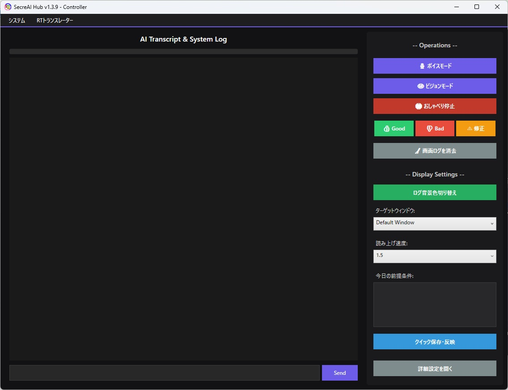
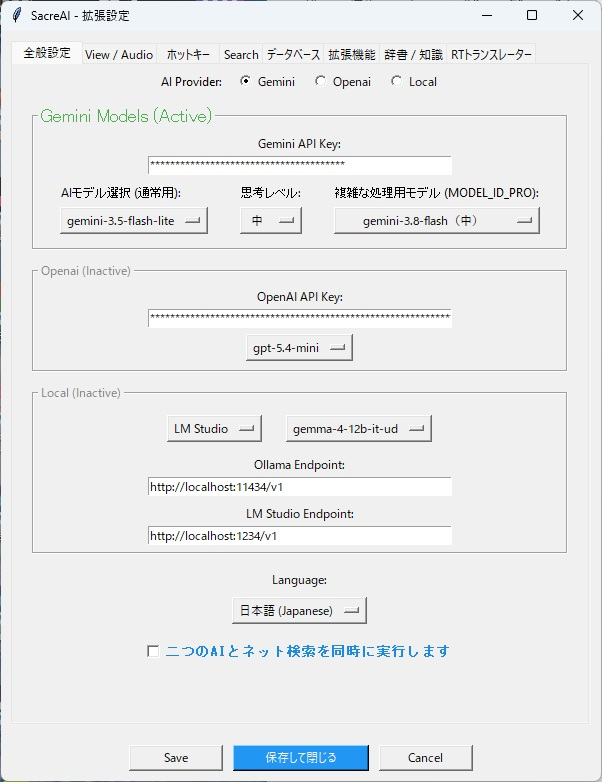
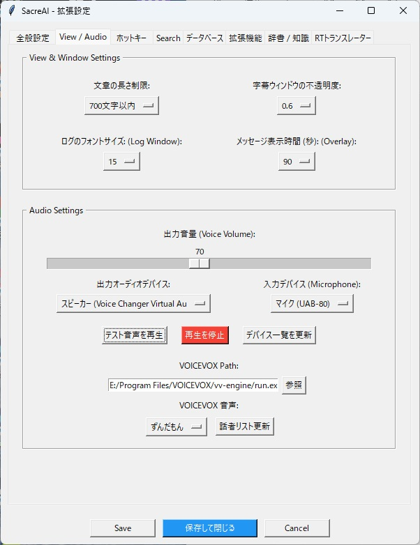
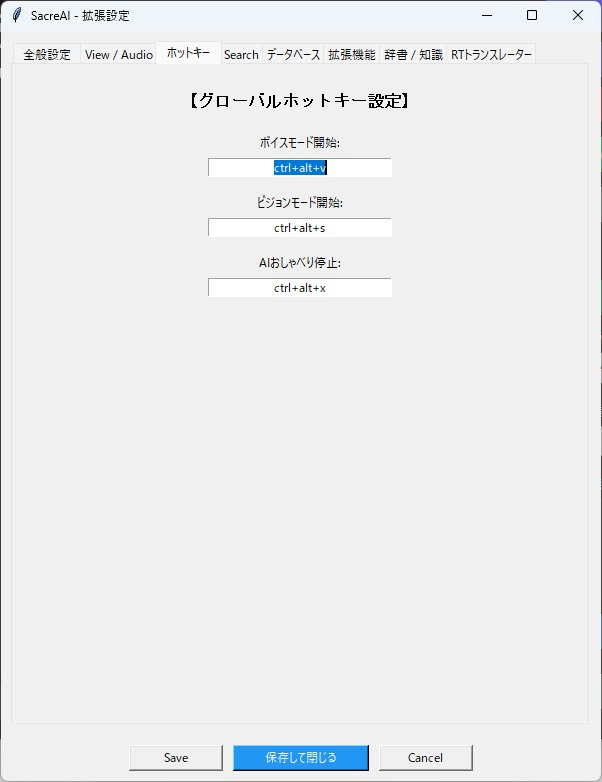
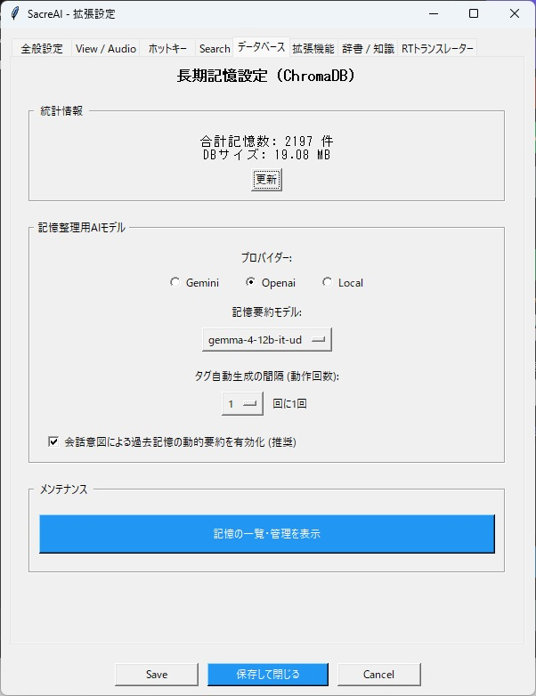
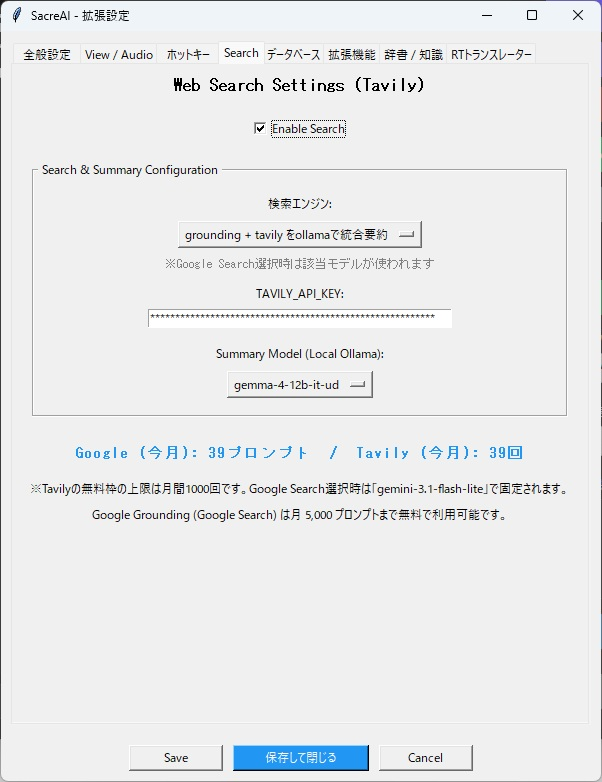
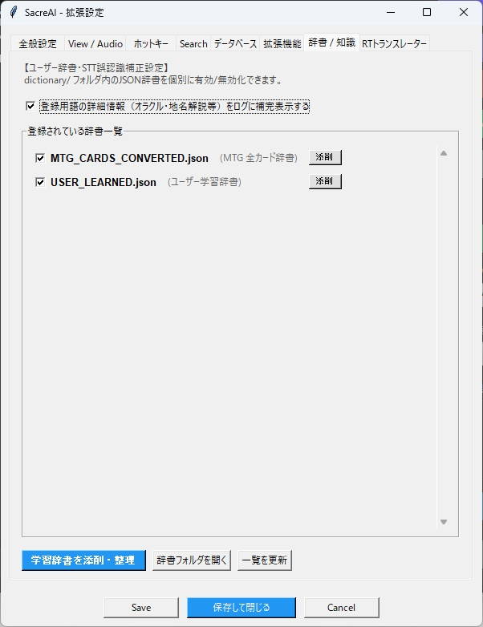
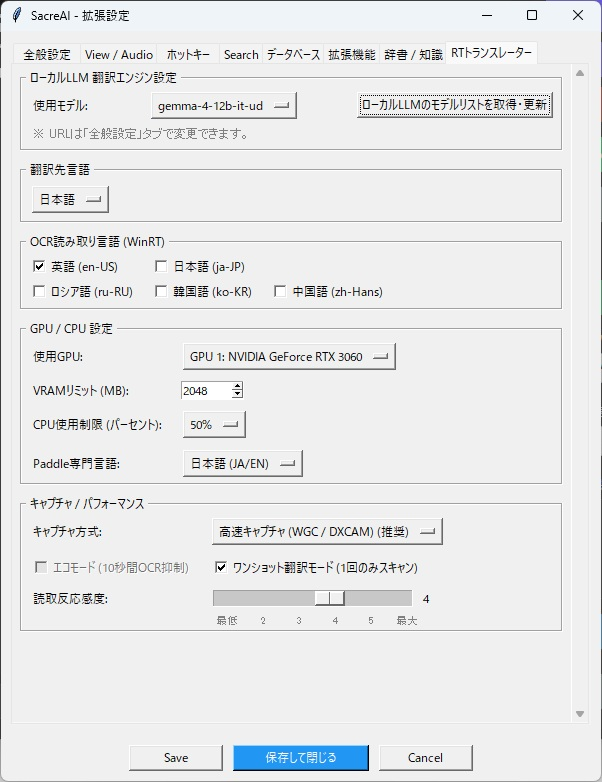
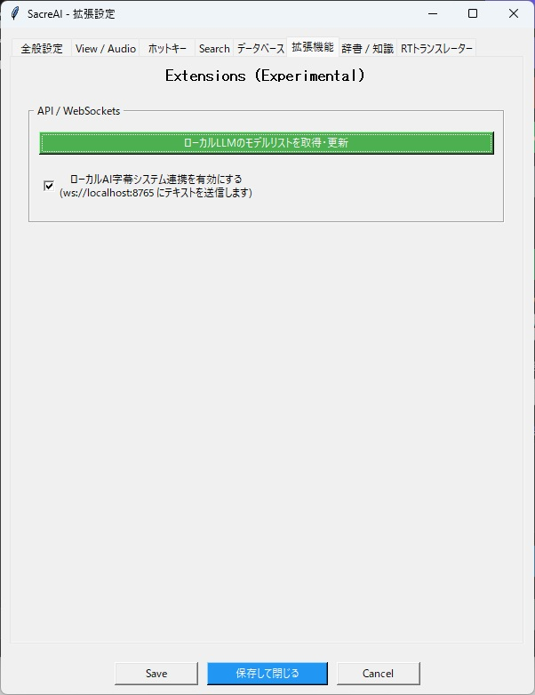

日常のPC作業やゲーム、ライブ配信で「AIを便利に使う」ために生まれた実用ツール群です。
設計：あまち ＆ コーディング：AI (Gemini) の共創により、すべてフリーで開発・公開しています。
Elgato Stream Deck やショートカットキーからワンボタンで現在の画面をキャプチャ。作業やゲームの手を一切止めずに、Gemini や GPT、ローカルLLMへ即座に質問・対話できるデスクトップAIアシスタントです。
Elgato Stream Deck（HTTP API連携）やグローバルホットキー（Ctrl+Alt+S等）を押すだけで、ターゲット画面を瞬時にキャプチャしてAIに提示。スクリーンショットを撮って貼り付ける手間をゼロにし、作業やゲームの没入感を妨げません。
会話を「短期・中期・長期」の3段階で管理し、ChromaDB（ベクトル検索＋キーワード検索）に蓄積。話せば話すほどあなたの好みや文脈・遊んでいるゲームの設定を記憶し、Good/Bad評価や自己学習辞書で賢い相棒へと成長します。
メイン対話は高性能なクラウドAI（Gemini / OpenAI）を使いつつ、記憶の要約整理・ネット検索結果の統合・事前判定（ゲートキーパーAI）をローカルLLM（Ollama / LM Studio）に任せることで、APIトークン消費とコストを劇的にカットします。
画面内の英語や外国語テキストをOCR（WinRT / PaddleOCR）でリアルタイムに読み取り、ローカルLLM等で自然言語へ翻訳表示するRTトランスレーターを同梱。海外ゲームや英語ドキュメント読解の強力な手助けになります。
すべての操作は洗練されたダークテーマの専用ハブ画面に集約。テキストチャットはもちろん、マイクを使ったボイスモード、画面を見せるビジョンモード、AIの回答に対するフィードバック（Good / Bad / 修正）がワンクリックで行えます。

※クリックで画像を拡大表示できます（言語切替で英語版UI画像に切り替わります）SecreAI を動かすために必須となるクラウドAIのAPIキー取得先と、組み合わせて使うことで機能が大幅に広がる推奨ツール（無料）の公式リンク一覧です。
会話や画面認識（ビジョンモード）の頭脳となるAIエンジンです。まずは無料枠のある Gemini API キーの取得が最も手軽でおすすめです。
SecreAIのメインエンジンです。Googleアカウントがあれば「Google AI Studio」から数クリックでAPIキーを発行できます。
Google AI Studio でAPIキーを取得する →GPTシリーズ（gpt-5.4-mini等）をメイン対話や記憶整理に使用したい場合に取得してください。
OpenAI Platform でAPIキーを取得する →後から必要に応じて追加できます。音声読み上げやトークン節約、リアルタイム翻訳を使う場合に導入してください。
AIの返答を自然な日本語キャラクター音声（ずんだもん等）でリアルタイムに読み上げるための無料テキスト読み上げソフトウェアです。
VOICEVOX 公式サイトからダウンロード →ご自身のPC（GPU）上でローカルAI（Gemma等）を動かすツールです。記憶DBの要約整理、検索結果の統合、RTトランスレーターをAPI費用ゼロで実行できます。
AIがリアルタイムのネット検索を行うための検索特化APIです（月間1,000回まで無料枠あり）。Google Groundingと併用することで検索精度が向上します。
Tavily 公式サイトでAPIキーを取得する →
SecreAIは多機能ですが、最初からすべての設定項目を触る必要はありません。
「3つの基本ステップ」だけで、すぐにAIアシスタントとの対話を始められます。
初回起動時は「セットアップウィザード」が自動で案内します。設定画面の「全般設定（General）」で、普段使いたいAI（Gemini / OpenAI / Local）を選び、事前準備で取得したAPIキーを入力するだけで準備完了です。

「View / Audio」タブで、字幕オーバーレイの透明度やフォントサイズ、入出力マイク・スピーカーを選択します。VOICEVOXを導入済みの場合はパスを指定すれば、好きな声でAIが応答します。

「ホットキー」タブで「ビジョンモード開始（Ctrl+Alt+S等）」や「ボイスモード開始」のキーを設定。Elgato Stream Deck をお使いなら、ボタン1つで画面キャプチャ＋音声質問が発動します。

SecreAI は起動中にローカルWebサーバー（デフォルト: localhost:5000 / localhost:5001）をバックグラウンドでホストしています。
Elgato Stream Deck の「Webサイト（バックグラウンドでアクセス）」アクションや外部マクロ、スクリプトから以下のURLへGETリクエストを送信するだけで、作業中のウィンドウフォーカスを一切奪わずにワンタッチ制御が可能です。
| 機能 / 動作 | HTTP エンドポイント URL | 方式 | 詳細説明 |
|---|---|---|---|
| ビジョンモード（画面キャプチャ質問） | http://localhost:5000/api/vision |
GET | 現在のターゲット画面を瞬時にキャプチャし、AIへの質問受付を開始します。作業の手を止めないワンボタン操作のメイン機能です。 |
| ボイスモード（音声対話） | http://localhost:5000/api/voice |
GET | AIがマイクの音声入力待機状態に入り、音声で直接指示や質問が行えます。 |
| おしゃべり即時停止 | http://localhost:5000/api/stop |
GET | AIの思考処理やVOICEVOXによる音声読み上げを即座に中断します。 |
| Good評価（ポジティブ学習） | http://localhost:5000/api/feedback_good |
GET | 直前のAIの回答を高く評価し、学習用ログに記録して振る舞いを強化します。 |
| Bad評価（ネガティブ学習） | http://localhost:5000/api/feedback_bad |
GET | 直前の回答に不備や誤りがあったことを指摘し、AIの自己改善を促します。 |
| 履歴の修正マーク | http://localhost:5000/api/fix |
GET | 直前の回答に「修正要」フラグを付与し、後からの辞書登録や修正に役立てます。 |
| 会話リセット＆記憶同期 | http://localhost:5000/api/clear |
GET | 現在の会話要点を長期記憶データベース（ChromaDB）に保存・同期した上で、直近の会話履歴を初期化します。 |
| 設定画面の表示 | http://localhost:5000/api/settings |
GET | SecreAI の詳細設定パネルを最前面に呼び出して表示します。 |
| RTトランスレーター 切替 (ポート5001) | http://localhost:5001/api/translate |
GET | 画面翻訳（RTトランスレーター）の実行と停止をワンボタンでトグル切り替えします。 |
| RTT 翻訳開始 (ポート5000) | http://localhost:5000/api/rtt_start |
GET | リアルタイム画面翻訳（OCRスキャン・翻訳ループ）を開始します。 |
| RTT 翻訳停止 (ポート5000) | http://localhost:5000/api/rtt_stop |
GET | リアルタイム画面翻訳を安全に停止します。 |
| RTT 翻訳リセット＆再スキャン | http://localhost:5000/api/rtt_retrans |
GET | 画面上の翻訳オーバーレイ表示を一度消去し、最新画面の強制再スキャンを実行します。 |
| RTT 稼働ステータス確認 | http://localhost:5000/api/rtt_status |
GET | RTトランスレータープロセスの稼働状態（実行中／停止中）をJSON形式で返答します。 |
| RTT エコモード切替 | http://localhost:5000/api/ecomode |
GET | 静止画面でのOCR頻度を抑える省電力・低負荷モードをON/OFFします。 |
基本操作に慣れてきたら、「もっと記憶を賢くしたい」「API料金を節約したい」「ゲームの専門用語を覚えさせたい」など、やりたいことに合わせて各設定タブを活用してください。
SecreAIの最大の特徴である「長期記憶（ChromaDB）」を管理する設定です。会話の要点をバックグラウンドで自動抽出し、数千件以上の記憶から関連するエピソードを瞬時に思い出します。
gemma-4-12b等）を指定すれば、クラウドAPIのトークンを一切消費せずに高度な記憶整理が可能です。
最新のニュースやゲームの攻略情報など、AI単体では知らない情報をリアルタイムにWeb検索（Google Grounding / Tavily API）して回答に組み込む設定です。

マイク音声認識（STT）の誤変換を補正し、カードゲーム（MTG等）や専門分野の用語解説をAIの知識として自動補完する機能です。
dictionary/ フォルダ内の専門辞書（MTG全カード辞書など）とユーザー学習辞書（USER_LEARNED.json）をチェックボックスで即座に切り替え可能。
おまけ機能でありながら単体ソフト級の性能を持つリアルタイム画面OCR＆翻訳機能の詳細設定です。PCスペックやゲーム負荷に合わせて細かくチューニングできます。

外部ソフトウェアとのWebSocket連携や、ローカルLLM（Ollama / LM Studio）のモデルリスト同期を行う拡張設定です。
ws://localhost:8765 を通じて外部の字幕表示システム（SubtitLocar等）へリアルタイムにテキストを送信でき、配信画面の構築がさらに捗ります。
SecreAI と連携して使える字幕ツールや、ローカルLLMを活用したニュースリーダー、Chrome拡張機能などもすべて無料で公開しています。
ETS2 / ATS 向けの物理歩行追加プラグイン。専用ランチャーを起動するだけで自動セットアップが完了し、トラックから降りて緻密に作り込まれた街並みを自分の足で散策できます。ランチャー終了時にプラグインを自動消去する安全設計。

ローカルLLMを活用したリアルタイム字幕・音声テキスト変換ツール。SecreAIの拡張機能（WebSocket）とも連携可能で、配信や動画視聴のアクセシビリティを劇的に向上させます。
ローカルLLM（Ollama / LM Studio等）と連携するWindows向け自作RSSニュースリーダー。膨大なニュースフィードをAIが自動要約し、毎日の情報収集を効率化します。

YouTubeのプレイリスト管理や自動再生・トラッキングを快適化するGoogle Chrome向け拡張機能。日々の動画視聴やライブ配信巡回をよりスマートにします。
1つのブラウザタブ内で最大4つの動画（YouTube、ニコニコ動画、Vimeo等）を同時に並べて視聴できる4画面同時ビューア拡張機能。複数視点の配信追跡に最適です。
バグ報告、機能の要望、感想などは GitHub Issues またはリポジトリまでお気軽にお寄せください。